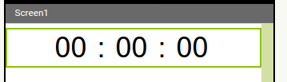
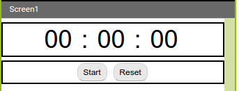
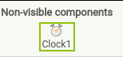
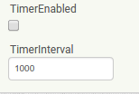
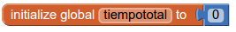
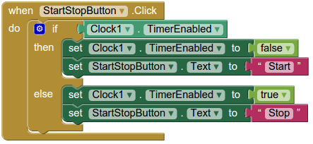
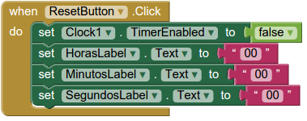
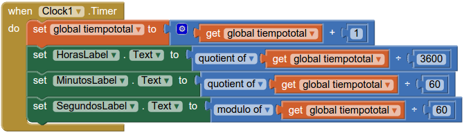
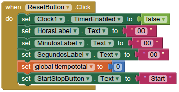
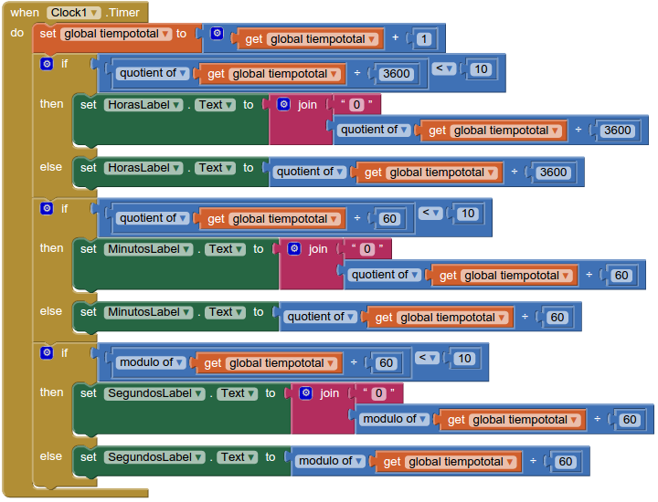

Cronómetro
Objetivos
Crear un cronómetro que mida las horas, minutos y segundos que han transcurrido, y además:
- Tenga un botón Start/Stop para iniciar/parar la cuenta.
- Tenga un botón Reset para reiniciar la cuenta.
Actividad
Abre AppInventor y crea un nuevo proyecto llamado "Cronometro".
Cambia la propiedad "AlignHorizontal" de "Screen1" a center.
Arrastra un "HorizontalArrangement" y ponle estas propiedades:
- Width: FillParent
- (después de la anterior) AlignHorizontal: center
Dentro del "HorizontalArrangement1" añade 5 Labels, renómbralas así:
- HorasLabel
- DosPuntosLabel1
- MinutosLabel
- DosPuntosLabel2
- SegundosLabel
Para todas las etiquetas ponles un "FontSize" de 40, y asígnales estos textos:
- "00"
- ":"
- "00"
- ":"
- "00"
De manera que te quede así:

Después añade otro "HorizontalArrangement" debajo, con estas propiedades:
- Width: FillParent
- (después de la anterior) AlignHorizontal: center
Dentro de ese "HorizontalArrangement" añade dos botones llamados StartStopButton y ResetButton.
Asígnales los textos "Start" y "Reset" respectivamente. También quedarán mejor redondeados:

Ahora vamos a añadir el temporizador que nos permitirá contar el tiempo. Para ello de la categoría "Sensors" arrastra un "Clock" a la pantalla, es un elemento no visible:

Explicamos un poco como funciona este "Clock1": es un contador que produce un evento cada cierta cantidad de tiempo. Esa cantidad la podemos especificar en milisegundos en la propiedad "TimeInterval". Por ejemplo, si "TimeInterval" vale 1000, el reloj se disparará cada segundo (1000 milisegundos).
Otro ejemplo, si "TimeInterval" vale 1 el reloj se disparará cada milisegundo, produciendo un evento que puede ejecutar las instrucciones que nosotros queramos cada milisegundo.
Para nuestro cronómetro solo vamos a medir hasta los segundos, así que vamos a fijar el valor "TimeInterval" a 1000.
La forma de poner en marcha este contador de tiempo es poniendo su propiedad "TimerEnabled" a True y para pararlo hay que ponerla a False.
Al principio del programa dejamos "TimerEnabled" desactivada (a False).

Vamos a programar al apartado de "Blocks":
Nuestro reloj va a contar por segundos, pero ese tiempo no se guarda en nigún sitio, necesitaremos una variable que guarde los segundos que han pasado desde que pongamos en marcha nuestro temporizador, después ya transformaremos a horas, minutos y segundos.
Así pues, vamos a crear una variable "tiempototal" que almacenará los segundos que han pasado. Esta variable se inicializará a 0.

Analicemos que pasa con el botón "StartStopButton" . Cuando hacemos click sobre este botón, puede ocurrir que no estemos contando tiempo (y se estaría mostrando el texto "Start"), en ese caso debemos poner el temporizador a contar y que el mensaje del botón sea "Stop", en otro caso es que sí que estaríamos contando tiempo (y se estaría mostrando el texto "Stop"), entonces debemos para de contar y colocar el mensaje "Start" en el botón. Traduciendo todo esto a instrucciones sería:

NOTA: EL "StartStopButton" no cambia las etiquetas que muestran el tiempo.
¿Que debe hacer el botón "ResetButton"? Cuando lo clickemos debe parar de contar el tiempo y también poner las etiquetas que cuentan las horas, minutos y segundos a "00".

Ahora vamos con la parte más difícil que es usar el temporizador "Clock1". Hemos configurado el "TimeInterval" a 1000 para que cada segundo que pase se produzca el evento
"When Clock1.Timer" dentro de ese evento sumaremos 1 a la variable que cuenta el tiempo transcurrido en segundos y después modificaremos las etiquetas de horas, minutos y segundos correspondientes haciendo uso de una fórmula matemática que consistirá en obtener cocientes o restos de divisiones (recuerda que una hora tiene 3600 segundos y un minuto 60 segundos). Como esta parte es un pelín más complicada la tienes resuelta aquí:

También tenemos que modificar lo que hace el "ResetButton" porque ahora deberá poner el contador de segundos a 0 cada vez que hagamos click. Además puede ocurrir que estemos contando y pulsemos el "ResetButton" por eso también deberemos cambiar al texto del "StarStopButton" a "Start".

Prueba tu aplicación con el móvil, prueba a parar la cuenta, resetarla, etc. ¿Que pasa cuando los segundos, minutos u horas tienen un valor inferior a 10?
Para que las etiquetas de las horas, minutos y segundos aparezcan con dos digitos debemos comprobar si el valor es menor que 10 y entonces añadirle un "0" por delante a la etiqueta, en caso contrario mostramos el valor tal cual. Aquí tienes el código modificado:

¿Que tal funciona ahora?
Ampliación
Modifica los programas para que quede más limpios.
Para ello crea tres variables "horas", "minutos" y "segundos" , inicializalas a 0.
Con el botón "ResetButton" también se ponen a 0. Y al principio del evento "Timer" de "Clock1" les asignas a cada una el valor de los tres cálculos matemáticos distintos que se hacen. Después los "if ...else" y "Set..." te quedaran más limpios.
Ampliación
Modifica la aplicación para sustituir los botones "StartStopButton" y "ResetButton" por dos imágenes (Objeto Picture) para las que puedes usar las que se muestran a continuación o crear tus propios botones:
Obra publicada con Licencia Creative Commons Reconocimiento No comercial Compartir igual 3.0

Programando en AppInventor por Francisco Nevado Montero se distribuye bajo una Licencia Creative Commons Atribución-NoComercial-CompartirIgual 4.0 Internacional.